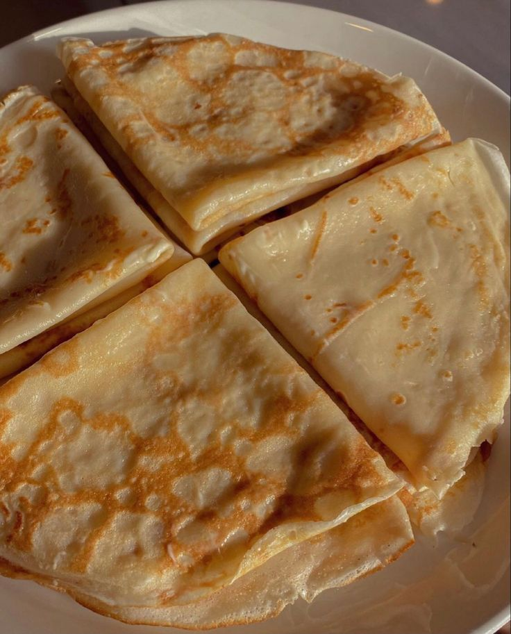
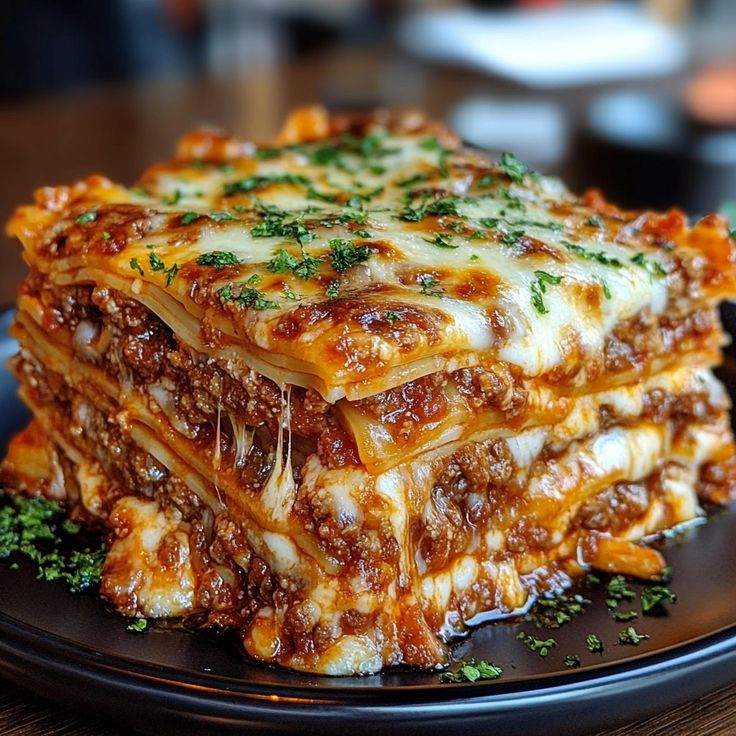
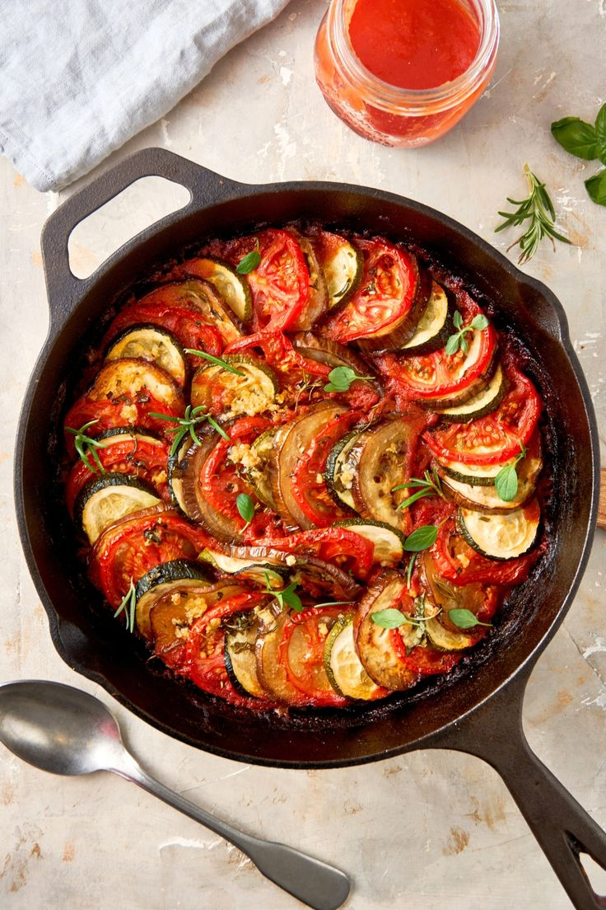
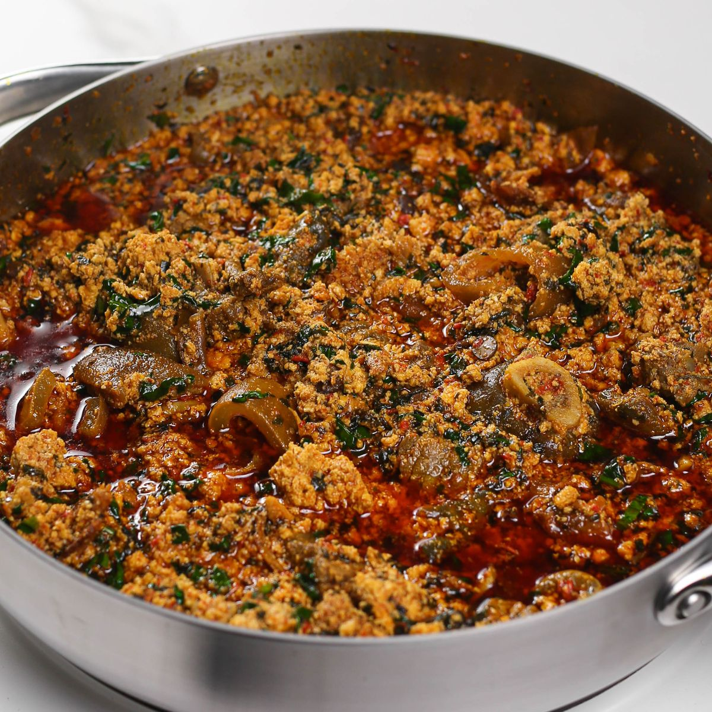
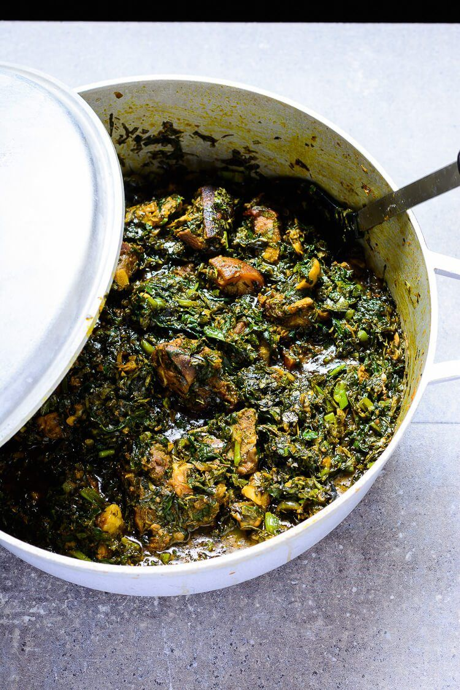
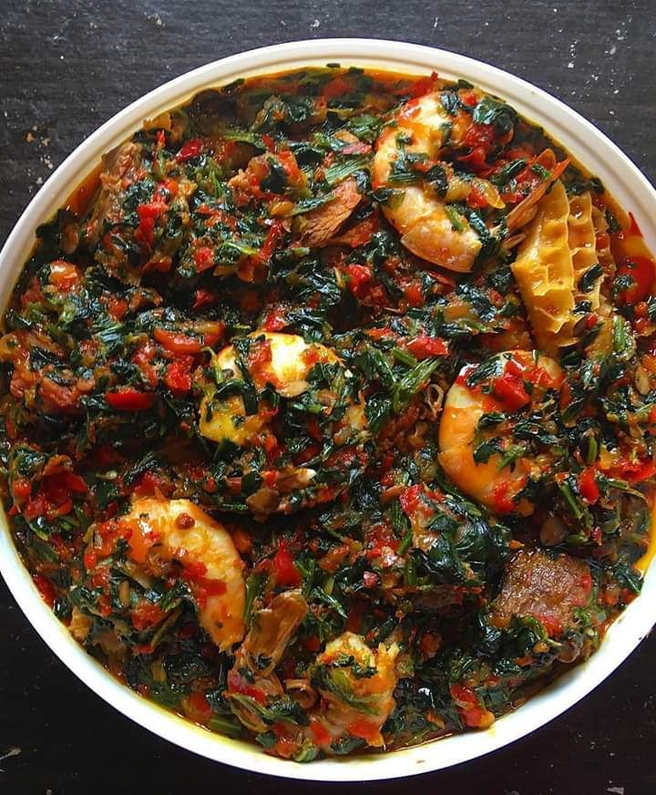
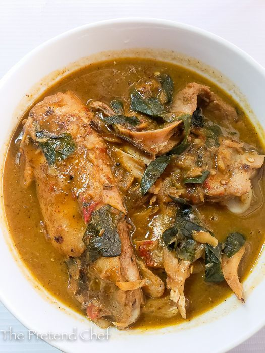
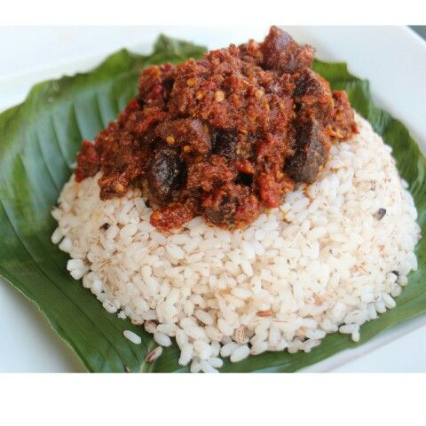
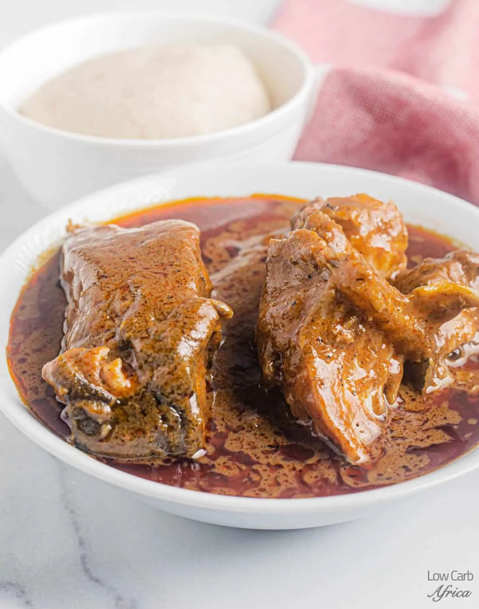

At EazyLearn, we believe that great food should be accessible to everyone, no
matter your background, cooking experience, or where you are in the world. Whether you're craving a
comforting local delicacy or looking to experiment with a classic continental dish, our platform is your
one-stop kitchen companion.
Founded with passion and purpose, EazyLearn was created to bridge the gap between traditional culinary roots
and global cuisine trends. We understand that food is more than nourishment—it's culture, connection, and
creativity.
OUR MISSION:
Our mission is simple:
To empower people to cook confidently by providing easy-to-follow, step-by-step recipes that span both
local and international cuisines.
We aim to:
Celebrate culinary diversity by showcasing authentic local dishes and international favorites.
Educate beginners and enthusiasts alike through detailed instructions, photos, and video tutorials.
Build a community of home cooks who share, learn, and grow together.
We believe in the power of food to bring people together, and our platform is a testament to that belief.
CONTINENTAL- DISHES :
Paella
Rice dish with seafood, chicken, or rabbit
Paella Recipe:
✨ Ingredients:
2 cups Bomba or Arborio rice
4 cups chicken or seafood stock
200g chicken, diced
200g shrimp, peeled and deveined
200g mussels or clams
1 bell pepper, diced
1 onion, chopped
2 cloves garlic, minced
1 teaspoon smoked paprika
1 teaspoon saffron threads
1 cup peas (fresh or frozen)
1 lemon, cut into wedges
Olive oil for cooking
Salt and pepper to taste
🥘Preparation Steps:
1. In a large skillet, heat olive oil over medium heat.
2. Add onion and bell pepper; sauté until softened.
3. Stir in garlic, smoked paprika, and saffron; cook for 1 minute.
4. Add rice; cook, stirring, for 2 minutes.
5. Pour in stock; bring to a boil.
6. Reduce heat; simmer for 15 minutes.
7. Add chicken, shrimp, mussels, and peas; cook until seafood is done.
8. Serve with lemon wedges.

Crepes
Thin pancakes served with sweet or savory fillings
Crepes Recipe:
✨ Ingredients:
1 cup all-purpose flour
2 large eggs
1 ½ cups milk
2 tablespoons melted butter
1 tablespoon sugar (optional for sweet crepes)
Pinch of salt
🥘Preparation Steps:
1. In a mixing bowl, whisk together flour, eggs, milk, melted butter, sugar (if using), and salt until smooth.
2. Heat a non-stick skillet over medium heat and lightly grease with butter.
3. Pour a small amount of batter into the skillet, swirling to coat the bottom evenly.
4. Cook for 1-2 minutes until the edges lift and the bottom is lightly golden.
5. Flip and cook for an additional 1-2 minutes on the other side.
6. Repeat with remaining batter, stacking crepes on a plate.
7. Serve with desired fillings and toppings.

Lasagna
Baked layered pasta with meat and cheese
Lasagna Recipe:
✨ Ingredients:
9–12 lasagna noodles
500g ground beef or sausage
1 onion, chopped
2 cloves garlic, minced
800g canned crushed tomatoes
400g ricotta cheese
200g mozzarella cheese, shredded
100g Parmesan cheese, grated
1 egg
Fresh basil leaves (optional)
Salt and pepper to taste
🥘Preparation Steps:
1. Preheat oven to 180°C (350°F).
2. Cook lasagna noodles according to package instructions; drain and set aside.
3. In a large skillet, cook ground beef or sausage, onion, and garlic until browned.
4. Add crushed tomatoes, salt, and pepper; simmer for 15 minutes.
5. In a bowl, mix ricotta cheese, egg, salt, and pepper.
6. In a baking dish, layer noodles, meat sauce, ricotta mixture, and mozzarella cheese.
7. Repeat layers, finishing with noodles and mozzarella on top.
8. Sprinkle Parmesan cheese on top.
9. Cover with foil and bake for 25 minutes; remove foil and bake for an additional 15 minutes until cheese is bubbly and golden.
Spaghetti - Carbonara
Pasta with eggs, cheese, pancetta, and pepper
Spaghetti Carbonara Recipe:
✨ Ingredients:
400g spaghetti
150g pancetta or guanciale, diced
2 large eggs
100g Pecorino Romano cheese, grated
Freshly ground black pepper
Salt (for pasta water)
🥘Preparation Steps:
1. Cook the spaghetti in salted boiling water until al dente. Reserve some pasta water, then drain.
2. In a pan, cook the pancetta until crispy. Remove from heat.
3. In a bowl, whisk together eggs, cheese, pepper, and a splash of pasta water.
4. Combine spaghetti, pancetta, and egg mixture in the pan, stirring quickly.
5. Serve immediately with extra cheese and pepper.
Tortilla - Española
Spanish omelette with potatoes and onions
Tortilla Española Recipe:
✨ Ingredients:
4 large eggs
2 medium potatoes, peeled and thinly sliced
1 onion, thinly sliced (optional)
Salt and pepper to taste
Olive oil for frying
🥘Preparation Steps:
1. Heat olive oil in a non-stick skillet over medium heat.
2. Add the sliced potatoes and cook until tender and lightly browned.
3. Add the onion (if using) and cook until softened.
4. In a bowl, beat the eggs with salt and pepper, then pour over the potatoes.
5. Cook until the eggs are set, then flip to cook the other side.

Ratatouille
Stewed vegetables (eggplant, zucchini, peppers)
Ratatouille Recipe:
✨ Ingredients:
1 large eggplant, diced
2 zucchinis, sliced
1 bell pepper, chopped
1 onion, chopped
2–3 cloves garlic, minced
4–5 ripe tomatoes, diced (or 1 can of diced tomatoes)
2 tablespoons olive oil
Salt and pepper to taste
Fresh basil or thyme for garnish (optional)
🥘Preparation Steps:
1. Heat the olive oil in a large skillet over medium heat.
2. Add the onion and garlic, sautéing until softened.
3. Stir in the eggplant and bell pepper, cooking until tender.
4. Add the zucchini and tomatoes, simmering until the vegetables are cooked through.
5. Season with salt, pepper, and herbs to taste.
6. Serve warm, garnished with fresh herbs if desired.
LOCAL-DISHES:

Egusi-Soup
Ground melon seeds cooked with leafy vegetables and assorted meats
Egusi Soup Recipe:
✨ Ingredients:
2 cups ground egusi (melon seeds)
1 cup palm oil
1 kg assorted meats (beef, goat meat, shaki, etc.)
1 cup stockfish (pre-soaked)
1 cup dried fish (washed and deboned)
2–3 cups waterleaf or spinach (washed and chopped)
1 medium onion (chopped)
2–3 tablespoons ground crayfish
2–3 tablespoons ground pepper (to taste)
2–3 seasoning cubes
Salt to taste
🥣 Preparation Steps:
1. Cook the Meat:
In a large pot, boil the assorted meats with salt, seasoning cubes, and chopped onion until tender.
Add the stockfish and dried fish halfway through cooking.
2. Prepare the Egusi Mixture:
In a bowl, mix the ground egusi with a little water to form a thick paste.
3. Add Palm Oil:
Once the meat is tender, add the palm oil to the pot and let it boil for about 5 minutes.
4. Add Egusi Paste:
Scoop spoonfuls of the egusi paste into the pot, stirring gently to avoid breaking the meat.
5. Add Vegetables:
Stir in the chopped waterleaf or spinach.
6. Season and Simmer:
Add ground crayfish, pepper, and more seasoning cubes if needed.
Let it simmer for another 10–15 minutes until the egusi is cooked and the oil floats to the top.
7. Taste and Adjust:
Taste for seasoning and adjust salt or pepper as needed.
🍽️Serve with:
Pounded yam
Eba
Fufu
Semovita

Afang-Soup
Efik/Ibibio soup with okazi and waterleaf.
Afang Soup Recipe:
✨ Ingredients:
2 cups Afang (Okazi) leaves – sliced or ground
4 cups water leaves – washed and sliced
1kg assorted meats – beef, shaki, kpomo, etc.
1 cup stockfish – pre-soaked
1 cup dry fish – deboned
1 cup periwinkle – in shell or out, washed
1 – 1½ cups palm oil
3 tablespoons crayfish – blended
1–2 teaspoons ground pepper – to taste
2–3 seasoning cubes
Salt to taste
1 onion (optional) – for seasoning meat
🥣 Preparation Steps
Prepare the Leaves
Soak dried Afang leaves in warm water and blend/pound coarsely.
Wash and slice water leaves finely. Set aside to drain.
Cook the Meat & Fish
Season assorted meats with salt, seasoning cubes, and onion.
Boil until tender.
Add stockfish and dry fish halfway into the cooking time.
Add Palm Oil
Pour in palm oil and boil for 5–7 minutes.
Add Crayfish, Pepper & Periwinkle
Add ground crayfish, pepper, and periwinkle.
Cook for another 5 minutes.
Add Water Leaves
Stir in the sliced water leaves.
Cook for 3–5 minutes until they release their moisture.
Add Afang Leaves
Add the Afang leaves and stir thoroughly.
Cook for another 5–7 minutes on low heat.
Taste & Adjust
Check for seasoning. Add more salt or cubes if needed.
Once the leaves are soft and oil surfaces, remove from heat.
🍽️ Serve With:
Fufu
Semovita
Pounded yam
Eba
Amala

Efo-Riro
A rich Yoruba vegetable soup made with spinach, pepper mix, and palm oil.
Ingredients for Efo Riro (Serves 4-6):
Vegetables:
Efo Shoko (Lagos spinach) or Efo Tete (African spinach) – 500g (or use fresh spinach or kale as a
substitute)
Waterleaf (optional, 1 cup chopped)
Proteins:
Assorted meats (beef, shaki (tripe), ponmo (cow skin), goat meat) – 500g
Stockfish or dry fish – 1 cup (optional)
Smoked fish or dried catfish – 1-2 pieces
Crayfish – 2 tablespoons (blended)
Ground or whole prawns (optional) – 2 tablespoons
Pepper mix:
Red bell peppers (Tatashe) – 3 large
Scotch bonnet (Ata rodo) – 2-3
Tomatoes – 2 medium (optional for lighter stew)
Onion – 1 large
Garlic (optional) – 2 cloves
Other Ingredients:
Palm oil – 1 cup (adjust to preference)
Seasoning cubes – 2-3 (Maggi, Knorr, etc.)
Salt – to taste
Onion – 1 extra (for sautéing)
Locust beans (Iru) – 2 tablespoons
🥘 Preparation Steps:
Step 1: Prepare the Meats and Fish
Wash and season the assorted meat with salt, seasoning cubes, chopped onion, and a little garlic or
ginger if preferred.
Boil until tender, starting with the toughest meat (like shaki), and add softer ones (like beef or
ponmo) later.
Add your stockfish and dry fish during the boiling process (if using).
Once cooked, set the meats aside, and reserve the meat stock.
Step 2: Prepare the Vegetables
Wash the Efo Shoko or spinach thoroughly to remove sand.
Blanch in hot water for 1–2 minutes, then immediately transfer to cold water (optional for spinach).
Squeeze out excess water and chop the vegetables. Set aside.
Step 3: Blend the Pepper Mix
Blend red bell pepper, scotch bonnet, tomatoes (if using), and 1 onion until coarse or smooth (your
choice).
Strain to remove excess water if it’s too watery.
Step 4: Cook the Pepper Sauce
Heat palm oil in a large pot (do not bleach).
Add chopped onions and locust beans (Iru). Fry for about 1 minute.
Pour in the blended pepper mix and stir well.
Cook uncovered for 10–15 minutes or until the sauce thickens and oil starts to separate.
Step 5: Add Meats and Seasoning
Add the cooked meats and some of the meat stock to the stew.
Stir in ground crayfish and prawns (if using).
Add seasoning cubes and salt to taste.
Simmer for another 10 minutes to allow the meat to soak in the flavor.
Step 6: Add Vegetables
Finally, stir in your chopped vegetables.
Mix thoroughly and cook for 3–5 more minutes. Do not overcook to retain the green color and
nutrients.
Adjust seasoning if needed.
🍛 Serving Suggestions:
Efo Riro pairs perfectly with:
Amala
Pounded yam
Eba (garri)
Fufu
Rice
Boiled yam or plantain

Nsala-Soup
A white soup made with yam and assorted meats, seasoned with local spices.
NSALA SOUP INGREDIENTS:
Main Ingredients:
1kg Catfish (or Goat meat, Chicken, or Fresh Fish)
5–6 pieces Stockfish (optional but recommended)
1–2 cups Yam slices (peeled and boiled for thickening)
1 tablespoon Crayfish (ground)
2 tablespoons Ground pepper (preferably yellow or habanero pepper)
2 Seasoning cubes (Maggi or Knorr)
1 Small Onion (optional – mostly used if using goat or chicken)
1 tablespoon Utazi leaves (optional – adds slight bitterness)
Salt to taste
📝 Note: Nsala soup is traditionally made with fresh catfish and thickened with yam (not cocoyam or
ogbono).
🥘 NSALA SOUP PREPARATION STEPS:
STEP 1: Prepare the Yam Thickener
Peel and slice yams into small chunks.
Boil in a pot with water until soft.
Pound in a mortar or blend into a smooth paste.
Set aside (you’ll use this to thicken the soup).
STEP 2: Prepare the Fish/Meat
For Fresh Catfish:
Wash catfish thoroughly with warm water and salt or lime to remove slime.
Cut into medium sizes.
Season with salt, 1 seasoning cube, and onions (if using meat instead of fish).
Add stockfish (previously soaked/boiled) and cook for 10–15 minutes with little water.
⚠️ Don’t over-stir catfish or it’ll break apart.
For Goat Meat or Chicken:
Start cooking the meat early with seasoning, onions, and water until soft.
Add stockfish and simmer together.
STEP 3: Blend Crayfish & Pepper
Blend the crayfish and yellow scotch bonnet pepper together (coarse blend).
You can add one small onion if using goat/chicken — skip if using fish.
STEP 4: Combine Soup Ingredients
Once protein is partially cooked:
Add the blended crayfish and pepper.
Add salt and the second seasoning cube.
Stir gently.
Add the yam paste:
Scoop the yam paste in small lumps into the soup.
Allow to dissolve slowly while cooking.
Add a bit more water if needed (for soup consistency).
Cover and simmer on medium heat for 10–15 minutes.
Stir gently so the fish doesn’t scatter.
Soup will begin to thicken naturally.
STEP 5: Add Utazi Leaves (Optional)
Slice utazi leaves thinly and sprinkle in the soup.
Simmer for another 5 minutes.
🍽️ SERVING SUGGESTION:
Serve hot with:
Pounded yam (traditional pair)
Semovita, Fufu, or Eba
Best enjoyed freshly made with a cold drink on the side.
✅ TIPS:
Use catfish for authentic Nsala soup — it gives a distinct taste.
Yam paste must be smooth for good texture.
Utazi is optional, but gives a light bitter balance.
You can replace yam with yam flour (elubo) if fresh yam isn't available.

Ofada-Rice
Local brown rice served with a spicy green pepper sauce
INGREDIENTS :
For the Ofada Rice:
2 cups Ofada rice (locally grown Nigerian rice)
Enough water to parboil and cook
Salt to taste
Note: Ofada rice is unpolished and has a distinct aroma. It usually contains stones or husks and needs
thorough washing.
For the Ofada Sauce (Ayamase / Designer Stew):
Main Ingredients:
10 pieces of green bell peppers (Tatashe)
2–3 pieces of green scotch bonnet (Ata rodo) (for heat)
2 medium onions (1 for blending, 1 for frying)
1 cup palm oil
1 tablespoon iru (locust beans)
1–2 teaspoons crayfish (ground)
2–3 seasoning cubes (e.g., Maggi, Knorr)
Salt to taste
Proteins (mix and match):
Assorted meats (shaki/tripe, kidney, liver, beef)
Cow skin (ponmo)
Boiled eggs (optional)
🥘 PREPARATION STEPS
STEP 1: Prepare the Ofada Rice
Pick and Rinse Thoroughly:
Ofada rice usually has stones/husks. Pick thoroughly.
Rinse 3–5 times to remove dirt and starch.
Parboil the Rice:
In a pot, boil enough water and add the rice.
Boil for about 10–15 minutes and drain the water.
Rinse Again:
Rinse under running water to remove excess starch.
Final Cooking:
Pour back into a pot, add enough water to cook.
Add salt and cook until soft but not mushy.
Drain excess water if needed and set aside.
STEP 2: Prepare the Ofada Sauce (Ayamase)
1. Boil and Season the Meats:
Season assorted meats with salt, onions, seasoning cubes.
Cook until tender and fry or grill them (optional for added texture).
Set aside.
2. Blend the Peppers:
Coarsely blend green bell peppers, scotch bonnet, and 1 onion.
Do not add too much water – just enough to aid blending.
3. Bleach the Palm Oil:
In a dry pot, pour the palm oil and cover slightly (not tightly!).
Bleach for 10–15 minutes on medium heat until it turns light golden brown.
Turn off the heat and allow it to cool before opening.
⚠️ Caution: Bleaching palm oil produces strong fumes. Ventilate your kitchen and stay safe.
4. Start Frying the Sauce:
Place the pot with bleached oil back on medium heat.
Add sliced onions and fry until lightly caramelized.
Add the iru (locust beans) and fry for 1–2 minutes.
5. Add the Blended Pepper Mix:
Pour in the blended pepper and stir.
Cook uncovered for about 20–30 minutes, stirring often, until the water reduces and oil starts
floating.
6. Season the Sauce:
Add ground crayfish, seasoning cubes, and salt to taste.
Add the cooked assorted meats.
Simmer for another 10 minutes to blend flavors.
7. (Optional) Add boiled eggs and stir gently.
🍽️ SERVING SUGGESTION:
Serve hot Ofada rice in banana leaves (traditional style).
Top generously with the Ofada sauce.
Pair with a chilled drink like zobo or chapman.
✅ TIPS:
Don’t overcook the rice — Ofada is best slightly firm.
The sauce tastes even better the next day.
You can add dried fish or stockfish for extra flavor.

Banga-Soup
A rich and flavorful soup made from palm nut extract, spices, and assorted meats.
INGREDIENTS:
For the Palm Nut Extract:
6–8 cups palm nuts (or 800g canned palm nut concentrate)
Proteins:
500g goat meat or beef (cut into bite sizes)
200g assorted meats (shaki, pomo, kidney, etc.)
200g stockfish (pre-soaked and shredded)
150g dried fish (washed and deboned)
Spices & Seasonings:
2 tablespoons Banga spice mix (a blend of ataiko, irugeje, beletete, etc.)
1 tablespoon ground crayfish
2 seasoning cubes (Maggi or Knorr)
1 small onion (for boiling meat)
Scotch bonnet pepper (to taste, blended or chopped)
Salt (to taste)
Optional:
Scent leaves or dried Bitter leaves (washed)
Ogiri okpei (fermented locust beans – optional but adds depth)
Periwinkles (optional)
Fresh fish or snails (optional) PROCEDURE:/strong> STEP 1: Prepare the Palm Nut Extract (Skip if using canned):
Boil the palm nuts in water for about 20–30 minutes until soft.
Pound the palm nuts in a mortar gently to loosen the flesh from the nuts.
Add warm water to the pounded nuts, mix thoroughly, and strain to extract the thick palm juice. Repeat
extraction once or twice to get enough liquid. Discard the chaff and keep the liquid. STEP 2: Prepare the Meat:
Season your meat, stockfish, and assorted meats with salt, 1 seasoning cube, and chopped onion.
Add a little water and boil until tender.
Add the dried fish last (5–10 minutes before it's done) to avoid breaking it apart.
STEP 3: Cooking the Banga Soup:
Pour the palm nut extract or canned palm concentrate into a pot and bring to a boil.
Allow it to boil on medium-high heat uncovered for 15–20 minutes to reduce and thicken.
Add the boiled meat and stock (with water from the meat pot).
Add crayfish, pepper, remaining seasoning cube(s), and Banga spices.
Stir and taste. Adjust salt and pepper as needed.
Simmer for 10–15 more minutes, letting the oil float to the top. STEP 4: Final Touch:
Add scent leaves or bitter leaves.
Add periwinkles or snails if using.
Let simmer for another 5 minutes.
🥘 SERVING:
Serve hot with:
Starch (Delta-style)
Eba (Garri)
Fufu
Pounded Yam
Semovita
Feedbacks from Our Community:
"EazyLearn has transformed how I cook. The recipes are easy to follow and the results are
always delicious!"
"I've been able to explore dishes from different cultures thanks to EazyLearn. It's like
traveling through food!"
"The step-by-step instructions and video tutorials made me a confident cook. Highly
recommend!"